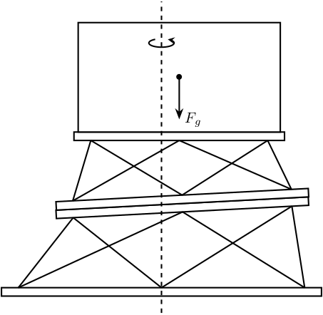

Tikz - Stewart Platforms
Table of Contents
1 Bottom Plate
\begin{tikzpicture} % Internal and external limit \draw[fill=white!80!black] (0, 0) circle [radius=3]; \draw[fill=white] (0, 0) circle [radius=1.5]; % Circle where the joints are located \draw[dashed] (0, 0) circle [radius=2.5]; % Division of 360 degrees by 3 \draw[dashed] (0, 0) -- (90:3.2); \draw[dashed] (0, 0) -- (210:3.2); \draw[dashed] (0, 0) -- (330:3.2); % 120 degree label \draw[dashed] (210:1) arc [start angle=210, end angle=330, radius=1] node[midway, below]{$\SI{120}{\degree}$}; % Angle offset of the position of the joints \draw[dashed] (0, 0) -- (100:3.2); \draw[dashed] (0, 0) -- (80:3.2); % \draw[<->] (80:3.2) node[right]{$\alpha$} arc [start angle=80, end angle=90, radius=3.2]; % Bullets for the positions of the joints \node[] at ( 80:2.5){$\bullet$}; \node[] at (100:2.5){$\bullet$}; \node[] at (200:2.5){$\bullet$}; \node[] at (220:2.5){$\bullet$}; \node[] at (320:2.5){$\bullet$}; \node[] at (340:2.5){$\bullet$}; \draw[<->] (0, 0) --node[near end, above]{$R_{\text{ext}}$} (0:3); \draw[<->] (0, 0) --node[midway, right]{$R_{\text{int}}$} (60:1.5); \draw[<->] (0, 0) --node[near end, above]{$R_{\text{leg}}$} (180:2.5); \end{tikzpicture}

2 Legs
\begin{tikzpicture} \draw[fill=white!80!black] (-1, 0) -- (-1, 5) -- (-0.7, 5) -- (-0.7, 2.5) -- (0.7, 2.5)-- (0.7, 5) -- (1, 5) -- (1, 0) -- cycle; \draw[fill=white!80!black] (0, 0) circle[radius=1.5]; \draw[dashed] (0, -2) -- (0, 5.5); \draw[<->] (0, 0)node[]{$\bullet$} -- node[midway, above]{$R$} (0:1.5); \draw[<->] (0, 4) -- node[midway, above]{$R_{\text{bot}}$} (1,4); \begin{scope}[shift={(4, 0)}] \draw[fill=white!80!black] (-0.7, 0) -- (-0.7, 5) -- (0.7, 5) -- (0.7, 0) -- cycle; \draw[fill=white!80!black] (0, 0) circle[radius=1.5]; \draw[dashed] (0, -2) -- (0, 5.5); \draw[<->] (0, 0)node[]{$\bullet$} -- node[midway, above]{$R$} (0:1.5); \draw[<->] (0, 4) -- node[midway, above]{$R_{\text{top}}$} (0.7,4); \end{scope} \end{tikzpicture}

3 Ball Joints
\begin{tikzpicture} \draw[fill=white!80!black] (-1, 0) -- (1, 0) -- (1, 3) arc (0:-180:1) -- cycle; \draw[dashed] (0, -0.5) -- (0, 3.5); \draw[<->] (0, -0.2) -- node[midway, below]{R} ++(1, 0); \draw[<->] (1.2, 0) -- node[midway, right]{H} ++(0, 3); \draw[<->] (0, 3)node[]{$\bullet$} -- node[midway, above right]{R} ++(-45:1); \end{tikzpicture}

4 Single Stewart platform
\begin{tikzpicture} % Parameters definitions \def\baseh{0.2} % Height of the base \def\naceh{0.2} % Height of the nacelle \def\baser{3.8} % Radius of the base \def\nacer{3.0} % Radius of the nacelle \def\armr{0.2} % Radius of the arms \def\basearmborder{0.2} \def\nacearmborder{0.2} \def\xnace{0.5} % X position of the nacelle \def\ynace{2.0} % Y position of the nacelle \def\anace{3.0} % Angle of the nacelle \def\xbase{0.0} % X position of the base \def\ybase{0.0} % Y position of the base \def\abase{0.0} % Angle of the base % Hexapod1 \begin{scope}[shift={(\xbase, \ybase)}, rotate=\abase] % Base \draw[fill=white] (-\baser, 0) rectangle (\baser, \baseh); \coordinate[] (armbasel) at (-\baser+\basearmborder+\armr, \baseh); \coordinate[] (armbasec) at (0, \baseh); \coordinate[] (armbaser) at (\baser-\basearmborder-\armr, \baseh); % Nacelle1 \begin{scope}[shift={(\xnace, \ynace)}, rotate=\anace] \draw[fill=white] (-\nacer, 0) rectangle (\nacer, \naceh); \coordinate[] (armnacel) at (-\nacer+\nacearmborder+\armr, 0); \coordinate[] (armnacec) at (0, 0); \coordinate[] (armnacer) at (\nacer-\nacearmborder-\armr, 0); \end{scope} % Nacelle1 END \draw[] (armbasec) -- (armnacer); \draw[] (armbasec) -- (armnacel); \draw[] (armbasel) -- (armnacel); \draw[] (armbasel) -- (armnacec); \draw[] (armbaser) -- (armnacec); \draw[] (armbaser) -- (armnacer); \end{scope} \end{tikzpicture}

5 Stacked Stewart platform
\begin{tikzpicture} % Parameters definitions \def\baseh{0.2} % Height of the base \def\naceh{0.2} % Height of the nacelle \def\baser{3.8} % Radius of the base \def\nacer{3.0} % Radius of the nacelle \def\armr{0.2} % Radius of the arms \def\basearmborder{0.2} \def\nacearmborder{0.2} \def\xnace{0.5} % X position of the nacelle \def\ynace{2.0} % Y position of the nacelle \def\anace{3.0} % Angle of the nacelle \def\xbase{0.0} % X position of the base \def\ybase{0.0} % Y position of the base \def\abase{0.0} % Angle of the base % Hexapod1 \begin{scope}[shift={(\xbase, \ybase)}, rotate=\abase] % Base \draw[fill=white] (-\baser, 0) rectangle (\baser, \baseh); \coordinate[] (armbasel) at (-\baser+\basearmborder+\armr, \baseh); \coordinate[] (armbasec) at (0, \baseh); \coordinate[] (armbaser) at (\baser-\basearmborder-\armr, \baseh); % Nacelle1 \begin{scope}[shift={(\xnace, \ynace)}, rotate=\anace] \draw[fill=white] (-\nacer, 0) rectangle (\nacer, \naceh); \coordinate[] (armnacel) at (-\nacer+\nacearmborder+\armr, 0); \coordinate[] (armnacec) at (0, 0); \coordinate[] (armnacer) at (\nacer-\nacearmborder-\armr, 0); \end{scope} % Nacelle1 END \draw[] (armbasec) -- (armnacer); \draw[] (armbasec) -- (armnacel); \draw[] (armbasel) -- (armnacel); \draw[] (armbasel) -- (armnacec); \draw[] (armbaser) -- (armnacec); \draw[] (armbaser) -- (armnacer); % Hexapod2 \begin{scope}[shift={(\xnace, \ynace+\baseh)}, rotate=\anace] \def\baser{3.0} % Radius of the nacelle \def\nacer{2.5} % Radius of the nacelle \def\xnace{0.0} % X position of the nacelle \def\ynace{1.5} % Y position of the nacelle \def\anace{-3.0} % Angle of the nacelle % Base \draw[fill=white] (-\baser, 0) rectangle (\baser, \baseh); \coordinate[] (armbasel) at (-\baser+\basearmborder+\armr, \baseh); \coordinate[] (armbasec) at (0, \baseh); \coordinate[] (armbaser) at (\baser-\basearmborder-\armr, \baseh); % Nacelle2 \begin{scope}[shift={(\xnace, \ynace)}, rotate=\anace] \draw[fill=white] (-\nacer, 0) rectangle (\nacer, \naceh); \coordinate[] (armnacel) at (-\nacer+\nacearmborder+\armr, 0); \coordinate[] (armnacec) at (0, 0); \coordinate[] (armnacer) at (\nacer-\nacearmborder-\armr, 0); \draw[] (armbasec) -- (armnacer); \draw[] (armbasec) -- (armnacel); \draw[] (armbasel) -- (armnacel); \draw[] (armbasel) -- (armnacec); \draw[] (armbaser) -- (armnacec); \draw[] (armbaser) -- (armnacer); % Sample \begin{scope}[shift={(0, \naceh)}] \def\samph{2.6} % Height of the sample \def\sampr{2.4} % Radius of the sample \draw[fill=white] (-\sampr, 0) rectangle (\sampr, \samph); \coordinate[] (massc) at (0, 0.5*\samph); \draw[->] (massc) node[]{$\bullet$} -- ++(0,-1) node[right]{$F_g$}; \end{scope} % Sample END \end{scope} % Nacelle2 END \end{scope} % Hexapod2 END \end{scope} % Hexapod1 END \draw[dashed] (0, -0.4) -- (0, 7); \node[] at (0, 6) {\AxisRotator[rotate=-90]}; \end{tikzpicture}

6 Stewart Platform - 3D - Jacobian
\begin{tikzpicture} \coordinate[] (O) at (0, 0); \coordinate[] (P) at (1, 2); \draw[thin] (O) circle (3.0 and 0.5); \draw[thin] (P) circle (1.5 and 0.25); \coordinate[] (A) at ($(O) + (-3.0, 0)$); \coordinate[] (B) at ($(P) + (-1.5, 0)$); \node[branch] at (O){}; \node[branch] at (P){}; \node[branch] at (A){}; \node[branch] at (B){}; \draw[thin] (A) node[above left]{$A_i$} -- node[midway, above left]{$d_i$} (B) node[above left]{$B_i$}; \draw[->] (O) -- node[midway, right]{$\vec{p}$} (P); \draw[->] (O) -- node[midway, above]{$\vec{a_i}$} (A); \draw[->] (A) -- node[midway, above]{$\vec{s_i}$} ($(A)!1cm!(B)$); \draw[->] (O) node[above left]{$O$} -- ++(1,0,0) node[anchor=north east]{$x$}; \draw[->] (O) -- ++(0,1,0) node[anchor=north west]{$y$}; \draw[->] (O) -- ++(0,0,1) node[anchor=south]{$z$}; \draw[->] (P) node[above left]{$P$} -- ++(1,0,0) node[anchor=north east]{$u$}; \draw[->] (P) -- ++(0,1,0) node[anchor=north west]{$v$}; \draw[->] (P) -- ++(0,0,1) node[anchor=south]{$w$}; \end{tikzpicture}

7 Cubic Stewart Platform - Not aligned
\begin{tikzpicture} \begin{scope}[rotate={45}, shift={(0, 0, -4)}] % We first define the coordinate of the points of the Cube \coordinate[] (bot) at (0,0,4); \coordinate[] (top) at (4,4,0); \coordinate[] (A1) at (0,0,0); \coordinate[] (A2) at (4,0,4); \coordinate[] (A3) at (0,4,4); \coordinate[] (B1) at (4,0,0); \coordinate[] (B2) at (4,4,4); \coordinate[] (B3) at (0,4,0); % Center of the Cube \node[] at ($0.5*(bot) + 0.5*(top)$){$\bullet$}; % Size of the cube \draw[<->, dashed] ($(B1)+(0.2, 0, 0)$) -- node[midway, above right]{$L$} ($(top)+(0.2, 0, 0)$); % We then draw parts of the cube that is not part of the Stewart platform \draw[dashed] (A1) -- (bot); \draw[dashed] (A2) -- (bot); \draw[dashed] (A3) -- (bot); \draw[dashed] (B1) -- (top); \draw[dashed] (B2) -- (top); \draw[dashed] (B3) -- (top); % We draw parts of the cube that corresponds to the Stewart platform \draw[] (A1)node[]{$\bullet$} -- (B1)node[]{$\bullet$} -- (A2)node[]{$\bullet$} -- (B2)node[]{$\bullet$} -- (A3)node[]{$\bullet$} -- (B3)node[]{$\bullet$} -- (A1); % ai and bi are computed \def\lfrom{0.1} \def\lto{0.6} \coordinate(a1) at ($(A1) - \lfrom*(A1) + \lfrom*(B1)$); \coordinate(b1) at ($(A1) - \lto*(A1) + \lto*(B1)$); \coordinate(a2) at ($(A2) - \lfrom*(A2) + \lfrom*(B1)$); \coordinate(b2) at ($(A2) - \lto*(A2) + \lto*(B1)$); \coordinate(a3) at ($(A2) - \lfrom*(A2) + \lfrom*(B2)$); \coordinate(b3) at ($(A2) - \lto*(A2) + \lto*(B2)$); \coordinate(a4) at ($(A3) - \lfrom*(A3) + \lfrom*(B2)$); \coordinate(b4) at ($(A3) - \lto*(A3) + \lto*(B2)$); \coordinate(a5) at ($(A3) - \lfrom*(A3) + \lfrom*(B3)$); \coordinate(b5) at ($(A3) - \lto*(A3) + \lto*(B3)$); \coordinate(a6) at ($(A1) - \lfrom*(A1) + \lfrom*(B3)$); \coordinate(b6) at ($(A1) - \lto*(A1) + \lto*(B3)$); % Center of the Stewart Platform \node[color=colorblue] at ($0.25*(a1) + 0.25*(a6) + 0.25*(b3) + 0.25*(b4)$){$\bullet$}; % We draw the fixed and mobiles platforms \path[fill=colorblue, opacity=0.2] (a1) -- (a2) -- (a3) -- (a4) -- (a5) -- (a6) -- cycle; \path[fill=colorblue, opacity=0.2] (b1) -- (b2) -- (b3) -- (b4) -- (b5) -- (b6) -- cycle; \draw[color=colorblue, dashed] (a1) -- (a2) -- (a3) -- (a4) -- (a5) -- (a6) -- cycle; \draw[color=colorblue, dashed] (b1) -- (b2) -- (b3) -- (b4) -- (b5) -- (b6) -- cycle; % The legs of the hexapod are drawn \draw[color=colorblue] (a1)node{$\bullet$} -- (b1)node{$\bullet$}; \draw[color=colorblue] (a2)node{$\bullet$} -- (b2)node{$\bullet$}; \draw[color=colorblue] (a3)node{$\bullet$} -- (b3)node{$\bullet$}; \draw[color=colorblue] (a4)node{$\bullet$} -- (b4)node{$\bullet$}; \draw[color=colorblue] (a5)node{$\bullet$} -- (b5)node{$\bullet$}; \draw[color=colorblue] (a6)node{$\bullet$} -- (b6)node{$\bullet$}; % Labels \node[left=0.1 of a5] {$a_i$}; \node[left=0.1 of b5] {$b_i$}; \end{scope} % Height of the Hexapod \coordinate[] (sizepos) at ($(a2)+(0.2, 0)$); \coordinate[] (origin) at (0,0,0); \draw[<->, dashed] (a2-|sizepos) -- node[midway, right]{$H$} (b2-|sizepos); % Height offset \draw[<->, dashed] (a2-|sizepos) -- node[midway, right]{$H_0$} (origin-|sizepos); \draw[->] (0,0,0) -- (0,0,1)node[left]{$x$}; \draw[->] (0,0,0) -- (1,0,0)node[above]{$y$}; \draw[->] (0,0,0) -- (0,1,0)node[right]{$z$}; \end{tikzpicture}

8 Cubic Stewart Platform - Centered
\begin{tikzpicture} \begin{scope}[rotate={45}, shift={(0, 0, -4)}] % We first define the coordinate of the points of the Cube \coordinate[] (bot) at (0,0,4); \coordinate[] (top) at (4,4,0); \coordinate[] (A1) at (0,0,0); \coordinate[] (A2) at (4,0,4); \coordinate[] (A3) at (0,4,4); \coordinate[] (B1) at (4,0,0); \coordinate[] (B2) at (4,4,4); \coordinate[] (B3) at (0,4,0); % Center of the Cube \node[] at ($0.5*(bot) + 0.5*(top)$){$\bullet$}; % Size of the cube \draw[<->, dashed] ($(B1)+(0.2, 0, 0)$) -- node[midway, above right]{$L$} ($(top)+(0.2, 0, 0)$); % We then draw parts of the cube that is not part of the Stewart platform \draw[dashed] (A1) -- (bot); \draw[dashed] (A2) -- (bot); \draw[dashed] (A3) -- (bot); \draw[dashed] (B1) -- (top); \draw[dashed] (B2) -- (top); \draw[dashed] (B3) -- (top); % We draw parts of the cube that corresponds to the Stewart platform \draw[] (A1)node[]{$\bullet$} -- (B1)node[]{$\bullet$} -- (A2)node[]{$\bullet$} -- (B2)node[]{$\bullet$} -- (A3)node[]{$\bullet$} -- (B3)node[]{$\bullet$} -- (A1); % ai and bi are computed \def\lfrom{0.2} \def\lto{0.8} \coordinate(a1) at ($(A1) - \lfrom*(A1) + \lfrom*(B1)$); \coordinate(b1) at ($(A1) - \lto*(A1) + \lto*(B1)$); \coordinate(a2) at ($(A2) - \lfrom*(A2) + \lfrom*(B1)$); \coordinate(b2) at ($(A2) - \lto*(A2) + \lto*(B1)$); \coordinate(a3) at ($(A2) - \lfrom*(A2) + \lfrom*(B2)$); \coordinate(b3) at ($(A2) - \lto*(A2) + \lto*(B2)$); \coordinate(a4) at ($(A3) - \lfrom*(A3) + \lfrom*(B2)$); \coordinate(b4) at ($(A3) - \lto*(A3) + \lto*(B2)$); \coordinate(a5) at ($(A3) - \lfrom*(A3) + \lfrom*(B3)$); \coordinate(b5) at ($(A3) - \lto*(A3) + \lto*(B3)$); \coordinate(a6) at ($(A1) - \lfrom*(A1) + \lfrom*(B3)$); \coordinate(b6) at ($(A1) - \lto*(A1) + \lto*(B3)$); % Center of the Stewart Platform \node[color=colorblue] at ($0.25*(a1) + 0.25*(a6) + 0.25*(b3) + 0.25*(b4)$){$\bullet$}; % We draw the fixed and mobiles platforms \path[fill=colorblue, opacity=0.2] (a1) -- (a2) -- (a3) -- (a4) -- (a5) -- (a6) -- cycle; \path[fill=colorblue, opacity=0.2] (b1) -- (b2) -- (b3) -- (b4) -- (b5) -- (b6) -- cycle; \draw[color=colorblue, dashed] (a1) -- (a2) -- (a3) -- (a4) -- (a5) -- (a6) -- cycle; \draw[color=colorblue, dashed] (b1) -- (b2) -- (b3) -- (b4) -- (b5) -- (b6) -- cycle; % The legs of the hexapod are drawn \draw[color=colorblue] (a1)node{$\bullet$} -- (b1)node{$\bullet$}; \draw[color=colorblue] (a2)node{$\bullet$} -- (b2)node{$\bullet$}; \draw[color=colorblue] (a3)node{$\bullet$} -- (b3)node{$\bullet$}; \draw[color=colorblue] (a4)node{$\bullet$} -- (b4)node{$\bullet$}; \draw[color=colorblue] (a5)node{$\bullet$} -- (b5)node{$\bullet$}; \draw[color=colorblue] (a6)node{$\bullet$} -- (b6)node{$\bullet$}; % Labels \node[left=0.1 of a5] {$a_i$}; \node[left=0.1 of b5] {$b_i$}; \end{scope} % Height of the Hexapod \coordinate[] (sizepos) at ($(a2)+(0.2, 0)$); \coordinate[] (origin) at (0,0,0); \draw[<->, dashed] (a2-|sizepos) -- node[midway, right]{$H$} (b2-|sizepos); % Height offset \draw[<->, dashed] (a2-|sizepos) -- node[midway, right]{$H_0$} (origin-|sizepos); \draw[->] (0,0,0) -- (0,0,1)node[left]{$x$}; \draw[->] (0,0,0) -- (1,0,0)node[above]{$y$}; \draw[->] (0,0,0) -- (0,1,0)node[right]{$z$}; \end{tikzpicture}

9 Cubic Stewart Platform - Definition
\begin{tikzpicture} \begin{scope}[rotate={45}, shift={(0, 0, -4)}] % We first define the coordinate of the points of the Cube \coordinate[] (bot) at (0,0,4); \coordinate[] (top) at (4,4,0); \coordinate[] (A1) at (0,0,0); \coordinate[] (A2) at (4,0,4); \coordinate[] (A3) at (0,4,4); \coordinate[] (B1) at (4,0,0); \coordinate[] (B2) at (4,4,4); \coordinate[] (B3) at (0,4,0); % Center of the Cube \node[] (cubecenter) at ($0.5*(bot) + 0.5*(top)$){$\bullet$}; \node[above right] at (cubecenter){$C$}; % We draw parts of the cube that corresponds to the Stewart platform \draw[] (A1)node[]{$\bullet$} -- (B1)node[]{$\bullet$} -- (A2)node[]{$\bullet$} -- (B2)node[]{$\bullet$} -- (A3)node[]{$\bullet$} -- (B3)node[]{$\bullet$} -- (A1); % ai and bi are computed \def\lfrom{0.1} \def\lto{0.8} \coordinate(a1) at ($(A1) - \lfrom*(A1) + \lfrom*(B1)$); \coordinate(b1) at ($(A1) - \lto*(A1) + \lto*(B1)$); \coordinate(a2) at ($(A2) - \lfrom*(A2) + \lfrom*(B1)$); \coordinate(b2) at ($(A2) - \lto*(A2) + \lto*(B1)$); \coordinate(a3) at ($(A2) - \lfrom*(A2) + \lfrom*(B2)$); \coordinate(b3) at ($(A2) - \lto*(A2) + \lto*(B2)$); \coordinate(a4) at ($(A3) - \lfrom*(A3) + \lfrom*(B2)$); \coordinate(b4) at ($(A3) - \lto*(A3) + \lto*(B2)$); \coordinate(a5) at ($(A3) - \lfrom*(A3) + \lfrom*(B3)$); \coordinate(b5) at ($(A3) - \lto*(A3) + \lto*(B3)$); \coordinate(a6) at ($(A1) - \lfrom*(A1) + \lfrom*(B3)$); \coordinate(b6) at ($(A1) - \lto*(A1) + \lto*(B3)$); % Center of the Stewart Platform % \node[color=colorblue] at ($0.25*(a1) + 0.25*(a6) + 0.25*(b3) + 0.25*(b4)$){$\bullet$}; % We draw the fixed and mobiles platforms \path[fill=colorblue, opacity=0.2] (a1) -- (a2) -- (a3) -- (a4) -- (a5) -- (a6) -- cycle; \path[fill=colorblue, opacity=0.2] (b1) -- (b2) -- (b3) -- (b4) -- (b5) -- (b6) -- cycle; \draw[color=colorblue, dashed] (a1) -- (a2) -- (a3) -- (a4) -- (a5) -- (a6) -- cycle; \draw[color=colorblue, dashed] (b1) -- (b2) -- (b3) -- (b4) -- (b5) -- (b6) -- cycle; % The legs of the hexapod are drawn \draw[color=colorblue] (a1)node{$\bullet$} -- node[midway, right]{$3$} (b1)node{$\bullet$}; \draw[color=colorblue] (a2)node{$\bullet$} -- node[midway, right]{$4$} (b2)node{$\bullet$}; \draw[color=colorblue] (a3)node{$\bullet$} -- node[midway, right]{$5$} (b3)node{$\bullet$}; \draw[color=colorblue] (a4)node{$\bullet$} -- node[midway, right]{$6$} (b4)node{$\bullet$}; \draw[color=colorblue] (a5)node{$\bullet$} -- node[midway, right]{$1$} (b5)node{$\bullet$}; \draw[color=colorblue] (a6)node{$\bullet$} -- node[midway, right]{$2$} (b6)node{$\bullet$}; % Labels \node[left=0.1 of a5] {$a_i$}; \node[left=0.1 of b5] {$b_i$}; \end{scope} % Height of the Hexapod \coordinate[] (sizepos) at ($(a2)+(0.2, 0)$); \coordinate[] (origin) at (0,0,0); % \draw[<->, dashed] (a2-|sizepos) -- node[midway, right]{$H$} (b2-|sizepos); % Height offset % \draw[<->, dashed] (a2-|sizepos) -- node[midway, right]{$H_0$} (origin-|sizepos); \draw[->] (0,6,0) node[above right]{$\{M\}$} -- ++(0,0,1); \draw[->] (0,6,0) -- ++(1,0,0); \draw[->] (0,6,0) -- ++(0,1,0); \draw[->] (0,2,0) node[below right]{$\{F\}$}-- ++(0,0,1)node[left]{$x$}; \draw[->] (0,2,0) -- ++(1,0,0)node[above]{$y$}; \draw[->] (0,2,0) -- ++(0,1,0)node[right]{$z$}; \draw[<->, dashed] (0.5,2,0) --node[near end, right]{${}^{F}O_{C}$} ++(0,2,0); \draw[<->, dashed] (-2,2,0) --node[midway, right]{${}^{F}H_{A}$} ++(0,1,0); \draw[<->, dashed] (-2,6,0) --node[midway, right]{${}^{M}H_{B}$} ++(0,-1.5,0); % Useful part of the cube \draw[<->, dashed] ($(A2)+(0.5,0)$) -- node[midway, right]{$H_{C}$} ($(B1)+(0.5,0)$); \end{tikzpicture}

10 Model of the Stewart platform Actuator